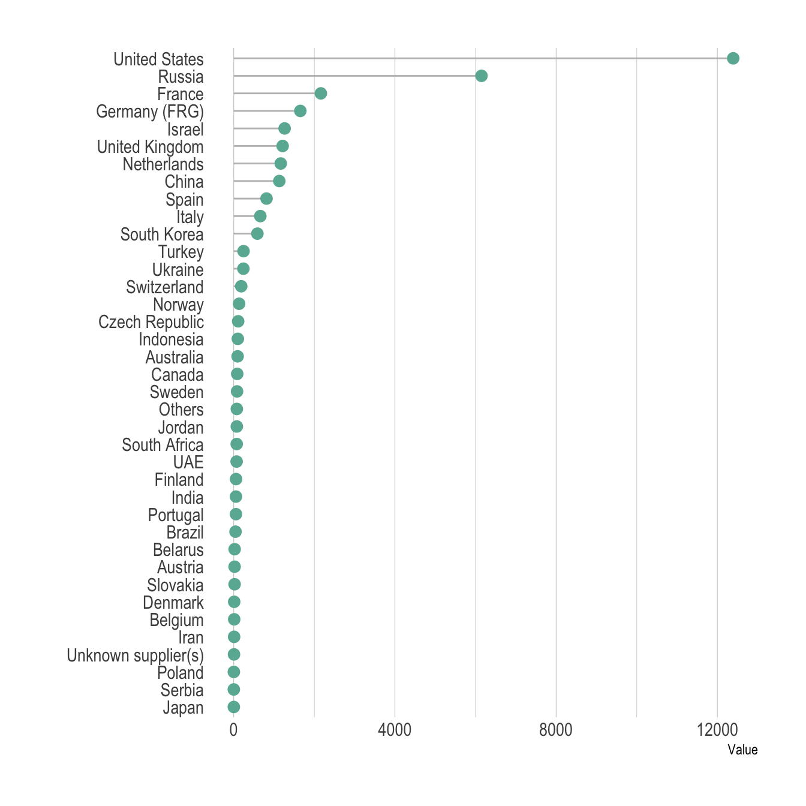
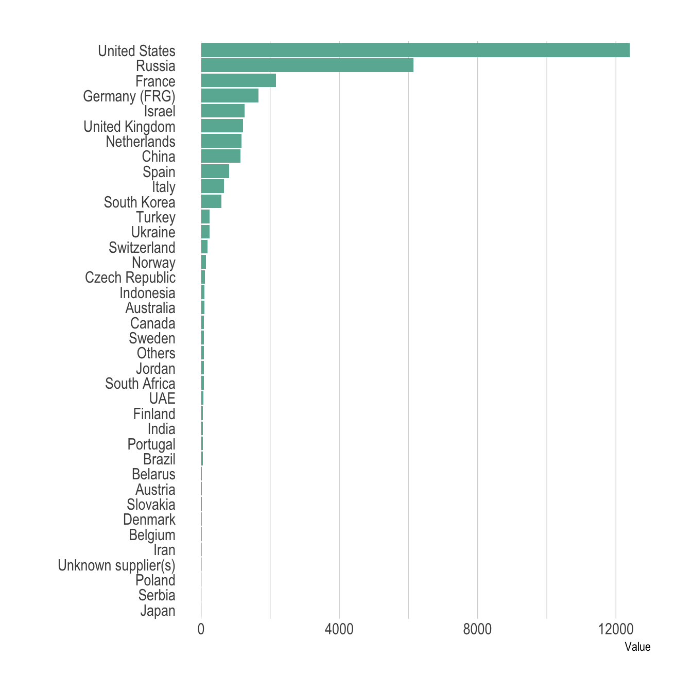
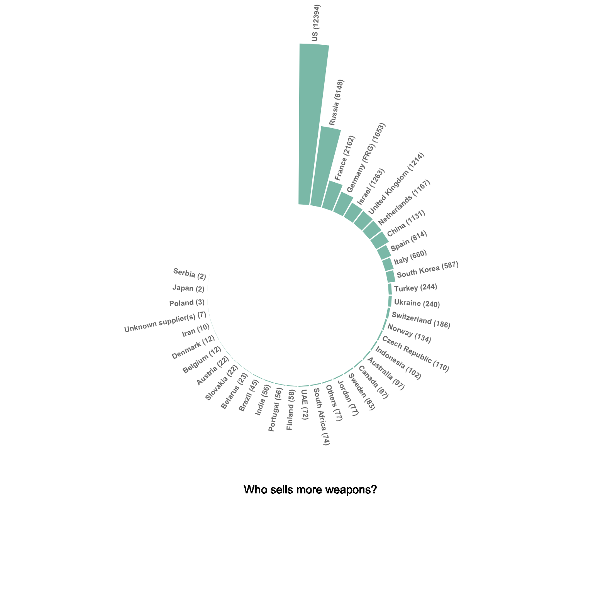
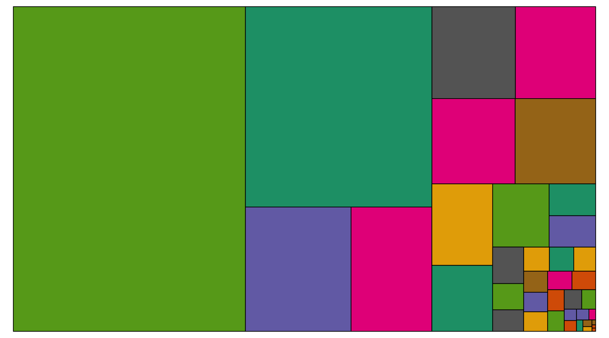
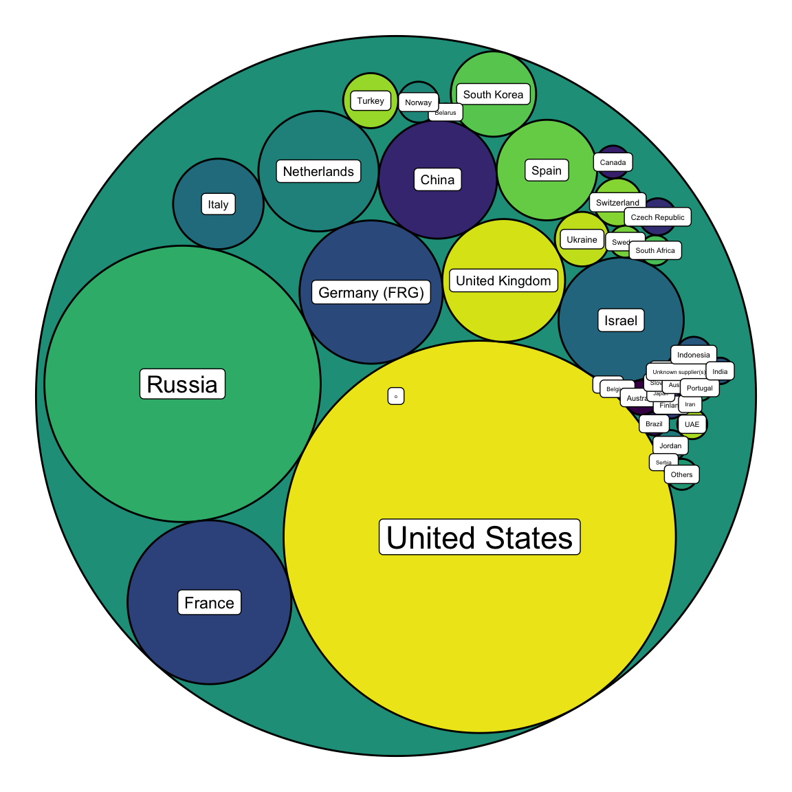

Who sells more weapons?
A few data analytics ideas from Data-to-Viz.com


This document gives a few suggestions to analyse a dataset composed by one numeric and one categoric variable.
The dataset used as an example provides the quantity of weapons exported by the top 50 largest exporters in 2017. This dataset has been downloaded on the Stockholm International Peace Research Institute website and more information about it are available here.
A clean version at .csv format is available on github, and the table beside shows how it looks like.
# Libraries
library(tidyverse)
library(hrbrthemes)
library(kableExtra)
options(knitr.table.format = "html")
# Load dataset from github
data <- read.table("https://raw.githubusercontent.com/holtzy/data_to_viz/master/Example_dataset/7_OneCatOneNum.csv", header=TRUE, sep=",")
# show data
data %>% head(6) %>% kable() %>%
kable_styling(bootstrap_options = "striped", full_width = F)| Country | Value |
|---|---|
| United States | 12394 |
| Russia | 6148 |
| Germany (FRG) | 1653 |
| France | 2162 |
| United Kingdom | 1214 |
| China | 1131 |
Even if the most common way to represent this kind of information is probably to use barplots, lollipop can be a very good alternative, especially if you have a high number of entities. It is basically the same thing, but the bar is replaced by a line and a dot at the end. It allows the figure to be less cluttered.
Moreover, it is a good practice to plot a horizontal version, to make the labels more easily readable. Last, sorting your entities gives much more insight to the plot.
data %>%
filter(!is.na(Value)) %>%
arrange(Value) %>%
mutate(Country=factor(Country, Country)) %>%
ggplot( aes(x=Country, y=Value) ) +
geom_segment( aes(x=Country ,xend=Country, y=0, yend=Value), color="grey") +
geom_point(size=3, color="#69b3a2") +
coord_flip() +
theme_ipsum() +
theme(
panel.grid.minor.y = element_blank(),
panel.grid.major.y = element_blank(),
legend.position="none"
) +
xlab("")
Here is the barplot version that looks very similar to the lollipop. This version is all right in this case where there is a lot of difference from one bar to the other. It would look way to cluttered with no or few differences.
data %>%
filter(!is.na(Value)) %>%
arrange(Value) %>%
mutate(Country=factor(Country, Country)) %>%
ggplot( aes(x=Country, y=Value) ) +
geom_bar(stat="identity", fill="#69b3a2") +
coord_flip() +
theme_ipsum() +
theme(
panel.grid.minor.y = element_blank(),
panel.grid.major.y = element_blank(),
legend.position="none"
) +
xlab("")
The circular barplot is an alternative to the barplots, where each bar is placed around a circle instead of along a line. The benefit is that your figure gets more eye-catching, and that it uses space more efficiently. However, differences between groups get harder to read. In my opinion, this kind of graphic is worth it if you have a high number of groups and if obvious differences exist between group.
# Order data
tmp <- data %>%
filter(!is.na(Value)) %>%
arrange(desc(Value)) %>%
mutate(Country=factor(Country, Country))
# Set a number of 'empty bar'
empty_bar=10
# Add lines to the initial tmpset
to_add = matrix(NA, empty_bar, ncol(tmp))
colnames(to_add) = colnames(tmp)
tmp=rbind(tmp, to_add)
tmp$id=seq(1, nrow(tmp))
# Get the name and the y position of each label
label_tmp=tmp
number_of_bar=nrow(label_tmp)
angle= 90 - 360 * (label_tmp$id-0.5) /number_of_bar # I substract 0.5 because the letter must have the angle of the center of the bars. Not extreme right(1) or extreme left (0)
label_tmp$hjust<-ifelse( angle < -90, 1, 0)
label_tmp$angle<-ifelse(angle < -90, angle+180, angle)
label_tmp$Country <- gsub("United States", "US", label_tmp$Country)
label_tmp$Country <- paste(label_tmp$Country, " (", label_tmp$Value,")", sep="")
# Make the plot
ggplot(tmp, aes(x=as.factor(id), y=Value)) + # Note that id is a factor. If x is numeric, there is some space between the first bar
geom_bar(stat="identity", fill=alpha("#69b3a2", 0.8)) +
ylim(-7000,13000) +
theme_minimal() +
theme(
axis.text = element_blank(),
axis.title = element_blank(),
panel.grid = element_blank(),
plot.margin = unit(rep(-1,4), "cm")
) +
coord_polar(start = 0) +
geom_text(data=label_tmp, aes(x=id, y=Value+200, label=Country ), color="black", fontface="bold",alpha=0.6, size=2.5, angle= label_tmp$angle, hjust=label_tmp$hjust, inherit.aes = FALSE ) +
geom_text( aes(x=24, y=8000, label="Who sells more weapons?"), color="black", inherit.aes = FALSE)
Please note that in this case the circular barplot do not look very good due to a lot of very small values that are hardly visible on the chart.
A treemap represents each entity as a rectangle, with an area that is proportional to the numeric variable of the dataset.
It is a good way to show a general overview of the data organization and is probably more eye-catching than the previous barplot. However, it is less precise in the sense that it is harder to make accurate comparisons between groups.
# Package
library(treemap)
# Plot
treemap(data,
# data
index="Country",
vSize="Value",
type="index",
# Main
title="",
palette="Dark2",
# Borders:
border.col=c("black"),
border.lwds=1,
# Labels
fontsize.labels=0.5,
fontcolor.labels="white",
fontface.labels=1,
bg.labels=c("transparent"),
align.labels=c("left", "top"),
overlap.labels=0.5,
inflate.labels=T # If true, labels are bigger when rectangle is bigger.
)
Circle packing is the circular version of the treemap. Each groupd is represented as a circle instead of a rectangle, and its area is proportional to the numeric value.
# Libraries
library(ggraph)
library(igraph)
library(tidyverse)
library(viridis)
# We need a data frame giving a hierarchical structure. Let's consider the flare dataset:
tmp <- data %>% filter(!is.na(Value))
edges <- data.frame(
from = "o",
to = tmp$Country
)
vertices = rbind(tmp, data.frame(Country="o", Value=1)) %>% mutate(name=Country)
mygraph <- graph_from_data_frame( edges, vertices=vertices )
ggraph(mygraph, layout = 'circlepack', weight="Value") +
geom_node_circle( aes(fill=name)) +
scale_fill_viridis(discrete=TRUE) +
geom_node_label(aes(label=name, size=Value)) +
theme_void() +
theme(
legend.position="none"
)
You can learn more about each type of graphic presented in this story in the dedicated sections. Click the icon below:
Any thoughts on this? Found any mistake? Have another way to show the data? Please drop me a word on Twitter or in the comment section below:
A work by Yan Holtz for data-to-viz.com